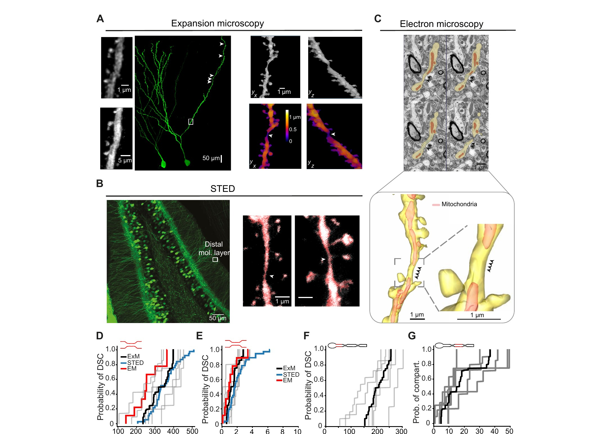

Qué cubre esta guía
Las citas remiten a la fuente y a su página o sección, por ejemplo Zeise p. 108, Purves p. 78 o apuntes, bloque III.
Fuera de alcance: la plasticidad en humanos y la neurogénesis, que son materia de la guía 06.
Lo esencial en 60 segundos
- La sinapsis química libera transmisor desde vesículas; la eléctrica une citoplasmas por uniones gap Zeise §4.1.1.
- Un transmisor debe posibilitar la transmisión química y almacenarse en vesículas sinápticas Zeise §4.1.
- Glutamato excita y GABA o glicina inhiben; ambos sistemas suman cerca de 80 millones de neuronas Zeise §4.2.
- El receptor NMDA es una puerta AND: necesita glutamato y despolarización para expulsar el magnesio Zeise §4.3.2.1.
- El calcio que entra por NMDA activa CaMKII y fosforila receptores AMPA, y así sostiene la LTP Zeise §4.3.2.1.
- La falla energética vuelve tóxico al glutamato y desencadena excitotoxicidad por calcio Zeise §4.3.3.
- Las monoaminas son pocas neuronas que proyectan a casi todo el sistema nervioso central Zeise §4.3.6.
- Las constricciones del tronco dendrítico amplifican la señal local y atenúan la que llega al soma Kelly §7.
Dos modos de contacto
Las células del sistema nervioso están separadas por membranas y no se comunican de manera directa Zeise §4.1.1. La sinapsis química resuelve el problema mediante un relevo: el terminal presináptico almacena transmisor en vesículas, lo libera hacia la hendidura y la molécula se une a receptores de la membrana postsináptica. El nexo, también llamado sinapsis eléctrica, lo resuelve sin relevo, porque los citoplasmas quedan en continuidad y pueden intercambiar iones y moléculas pequeñas, entre ellas algunos segundos mensajeros Zeise §4.1.1.
El nexo predomina en sinapsis inhibitorias, existe en todos los organismos vivos, desde unicelulares y plantas con plasmodesmos hasta animales, y en el ser humano sostiene el funcionamiento del corazón Zeise §4.1.1. Los nexos forman parte de una familia de canales iónicos distinta de la de los canales de voltaje del axón. Las sinapsis químicas, en cambio, están prácticamente restringidas a contactos neuronales, con unas pocas estructuras similares entre células del sistema inmune Zeise §4.1.1.
La dependencia de las uniones gap se vuelve clínica cuando falla una conexina. La conexina 32 se expresa en células de Schwann y forma canales que mantienen unidas las capas de mielina; su mutación causa la forma ligada al X de la enfermedad de Charcot-Marie-Tooth, un trastorno desmielinizante Kandel cap. 11. En la cóclea, la conexina 26 participa en la secreción de fluidos del oído interno, y sus mutaciones explican hasta la mitad de los casos de sordera congénita. Ambas conexinas forman canales de unión gap en tejidos distintos.
La sinapsis química es la sede de la farmacología nerviosa. La mayoría de las sustancias neuroactivas, tanto terapéuticas como recreativas, debe sus efectos a acciones sobre sinapsis o receptores de transmisores Zeise §4.1.2. Esa selectividad hizo posible que el curare y la nicotina revelaran una molécula receptiva en el músculo esquelético, aislada después como el receptor de acetilcolina de la unión neuromuscular (Langley, 1906). El concepto de receptor, formulado por Ehrlich en 1900 para explicar la acción selectiva de toxinas y la especificidad inmunológica, nace de ese mismo tipo de observación farmacológica Kandel cap. 11.
El transmisor no siempre actúa como tal. Una misma molécula puede cumplir funciones de hormona y de neurotransmisor, como la adrenalina o el glutamato, y la diferencia está en el modo de secreción Zeise §4.1.2. La hormona sale de una glándula endocrina o de otro tejido, viaja por la sangre y expone a casi todas las células, mientras el transmisor se libera en la hendidura y actúa de manera extremadamente local. Existe además la comunicación paracrina, en la que la secreción difunde solo a unas pocas células cercanas y que es común en los sistemas monoaminérgicos y en muchos neuropéptidos Zeise §4.1.2.
Los mensajeros retrógrados completan el cuadro: se liberan en el sitio postsináptico y afectan al presináptico, con lo que la comunicación deja de ser unidireccional Zeise §4.1.2. La transmisión punto a punto y la modulación de un circuito son, por eso, dos escalas distintas de análisis. La célula postsináptica puede así ajustar lo que la presináptica libera.
Qué convierte una molécula en transmisor
En informática, un transmisor es un dispositivo que crea una señal a partir de una fuente de datos (Shannon y Weaver, 1949); en neurociencia, el término designa moléculas mensajeras que forman parte de un canal de información Zeise §4.1. La literatura no es unánime sobre qué cuenta como neurotransmisor. La definición estricta, adoptada por el libro, exige que la sustancia posibilite la transmisión sináptica química y se almacene en vesículas sinápticas, mientras la definición amplia acepta toda molécula que module la transmisión. De ahí surge un criterio operativo: si una sustancia no se encuentra en ninguna vesícula sináptica, no se considera neurotransmisor, aunque pueda tratarse aparte como mensajero sináptico que no cumple función de transmisión Zeise §4.1. El criterio obliga a demostrar la presencia vesicular antes de otorgar el título.
El principio de Dale estipula que una neurona contiene y secreta un solo transmisor, y vale por lo general, con excepciones como la secreción conjunta de glutamato y dopamina Zeise §4.2. Ese principio permite clasificar las neuronas por su transmisor principal y hablar de neuronas glutamatérgicas o serotoninérgicas; el sufijo -érgico viene del griego ergon, trabajo. Una neurona, en cambio, recibe señales de una variedad de transmisores aunque use uno solo para enviar las propias Zeise §4.2.
Los transmisores principales se dividen en tres grupos: tres aminoácidos, cinco monoaminas y la acetilcolina sola Zeise §4.2. En el cerebro y el cerebelo hay alrededor de 80 millones de neuronas glutamatérgicas y GABAérgicas, frente a 165.000 serotoninérgicas de los núcleos del rafe y 20.000 noradrenérgicas del locus coeruleus. La proporción entre las neuronas que usan los dos aminoácidos y las que usan otros transmisores es de al menos 100.000 a 1, y el resto apenas alcanza unas 500.000 neuronas Zeise §4.2.
| Grupo | Miembros | Papel funcional |
|---|---|---|
| Aminoácidos | Glutamato, GABA, glicina | Excitación e inhibición rápidas; cerca de 80 millones de neuronas |
| Monoaminas | Dopamina, noradrenalina, adrenalina, serotonina, histamina | Modulación de proyección extensa |
| Acetilcolina | Acetilcolina | Única de su grupo; actúa en el sistema nervioso central, el autónomo y la unión neuromuscular |
Los aminoácidos son los caballos de trabajo del cerebro: el glutamato funciona como acelerador y el GABA o la glicina como frenos, que inhiben localmente y en gran parte por receptores ionotrópicos, de manera rápida y precisa Zeise §4.2. Esa arquitectura sostiene la mayor parte de la señalización rápida del cerebro. Las monoaminas y la acetilcolina, en cambio, no construyen la vía principal: la modulan.
La distinción entre transmisores principales y co-transmisores no es de número de tipos, sino de cantidad. Los principales son con creces los más importantes porque las cantidades liberadas superan en varios órdenes de magnitud a las de los neuropéptidos y co-transmisores Zeise §4.2. En situaciones normales, una neurona usa un transmisor clásico como su mensajero sináptico principal.
Glutamato: el eje excitatorio
El glutamato es, quizá, el transmisor más importante del cerebro y el principal excitatorio Zeise §4.3.1. Su característica más valiosa es la plasticidad, pero esa misma potencia lo vuelve peligroso cuando la liberación se descontrola. La misma maquinaria que sostiene el aprendizaje puede, en condiciones de falla energética, ejecutar la muerte neuronal Zeise §4.3.3.
Los receptores metabotrópicos de glutamato son ocho, mGluR1 a mGluR8, y se ubican tanto en el lado postsináptico como en el presináptico Zeise §4.3.1. Activan segundos mensajeros que suelen terminar en fosforilación o desfosforilación de proteínas blanco, y como casi todas las proteínas pueden pasar por ambos procesos, los efectos son numerosos. Regulan la liberación de glutamato mediante autorreceptores, modifican la excitabilidad neuronal e influyen en la plasticidad. También se los ha implicado en enfermedades neurodegenerativas y en la modulación de comportamientos sociales, con posible interés para trastornos psiquiátricos asociados al aislamiento Zeise §4.3.1.
La transmisión rápida depende de los receptores ionotrópicos. El receptor AMPA es un canal catiónico y su composición determina cuánto calcio puede pasar: la edición del ARN de la subunidad GluA2 coloca una arginina en el poro y establece la repulsión electrostática que impide el ingreso de calcio Kandel cap. 13. El receptor NMDA, en cambio, es permeable al calcio y exige coincidencia de señales.
El glutamato extracelular se mantiene bajo por un sistema de transportadores. Existen cuatro tipos principales, responsables de una recaptación que asegura el funcionamiento dinámico y una concentración extracelular baja Zeise §4.3.1. Esa recaptación impide que la señal se prolongue y que el transmisor se acumule en la hendidura Zeise §4.3.4.
Las patologías de los receptores ionotrópicos muestran cuánto depende la excitación de su composición exacta. Los autoanticuerpos contra la subunidad GluA3 del receptor AMPA lo activan como si fuera glutamato y producen crisis epilépticas. La pérdida de estargazina, necesaria para el tráfico y la localización sináptica de los AMPA, elimina estos receptores de las células granulares del cerebelo y causa ataxia con crisis frecuentes en el ratón stargazer. Si la edición de GluA2 falla, todos los AMPA se vuelven permeables al calcio y el animal presenta crisis y muerte en pocas semanas. La neuroligina postsináptica, que contacta con la neurexina presináptica, completa el cuadro de proteínas de adhesión cuya alteración se relaciona con autismo Kandel cap. 13.
| Receptor | Tipo | Rasgo distintivo |
|---|---|---|
| AMPA | Ionotrópico | Permeabilidad al calcio controlada por la edición de GluA2; su tráfico depende de estargazina |
| NMDA | Ionotrópico | Permeable a sodio, potasio y calcio; bloqueo por magnesio; funciona como puerta AND |
| mGluR1 a mGluR8 | Metabotrópico | Ocho subtipos; segundos mensajeros; autorreceptores presinápticos |
La puerta AND y la memoria sináptica
La hipótesis de Hebb, publicada en 1949, sostiene que la capacidad de aprender se debe en gran medida a cambios en las sinapsis Zeise §4.3.2. Su lógica se resume en una imagen: donde las personas caminan, surgen los caminos. Las conexiones que resultan útiles se refuerzan y sobreviven, mientras las poco usadas se encogen o se eliminan. Esa regla convierte la experiencia en arquitectura.
La plasticidad neuronal es la habilidad del sistema para reorganizarse en función de su historial. El aprendizaje designa la adquisición de una habilidad o la optimización de una existente y se refiere al rendimiento del sistema en su totalidad; la memoria es la capacidad de almacenar y recuperar información y constituye una condición necesaria del aprendizaje Zeise §4.3.2. No todo cambio nervioso es aprendizaje: olvidar también es un cambio plástico, y el aprendizaje solo se comprueba cuando aparece el comportamiento.
La eficacia sináptica es la relación entre la entrada presináptica y la respuesta postsináptica Zeise §4.3.2. Cuando aumenta hay potenciación, cuando disminuye hay depresión, y si el cambio persiste en el tiempo recibe el nombre de LTP o LTD. La plasticidad sináptica está ampliamente estudiada y se relaciona con el aprendizaje en casi todos los casos; la plasticidad celular, que depende de canales y bombas, influye en la excitabilidad pero su papel en el aprendizaje sigue siendo limitado. La mayor parte de lo que se sabe proviene de sinapsis glutamatérgicas, el tipo más común en el cerebro y el asociado a la comunicación entre áreas distantes.
El receptor NMDA fue la primera puerta AND descrita en neurociencia, en la década de los ochenta, y su modelo clásico es la sinapsis de las colaterales de Schaffer sobre la región CA1 del hipocampo, con origen en CA3 Zeise §4.3.2.1. La puerta exige dos condiciones simultáneas: presencia del agonista, glutamato, y despolarización de la parte postsináptica. En reposo, el magnesio divalente es arrastrado hacia el interior y bloquea el canal; a medida que la membrana se hace más positiva, aumenta la probabilidad de que el ion se aleje de la entrada y permita el flujo catiónico Zeise §4.3.2.1. El receptor es permeable a sodio y potasio y, a diferencia de otros ionotrópicos de glutamato, en gran medida al calcio, porque su poro tiene mayor diámetro.
La cascada que sigue es la que convierte una coincidencia en memoria. El calcio que entra no solo genera señales eléctricas: es mensajero intracelular y su aumento en el sitio postsináptico desencadena eventos con segundos mensajeros conocidos Zeise §4.3.2.1. Uno de ellos es la calcio-calmodulina-cinasa II, enzima que agrega fosfato a otras moléculas. El resultado es la fosforilación de los receptores AMPA, que los vuelve más efectivos, y la incorporación de receptores AMPA que no eran funcionales Zeise §4.3.2.1. Todo ello aumenta la eficacia sináptica. Cuando los receptores NMDA se obstruyen, el rendimiento en diversas pruebas de aprendizaje se socava de manera severa Zeise §4.3.2.1.
Una depresión de la eficacia que persiste en el tiempo constituye una LTD, y su existencia muestra que la sinapsis no solo se refuerza: también se debilita de forma duradera Zeise §4.3.2. Es el fenómeno inverso de la LTP: la eficacia baja en lugar de subir. El material define el fenómeno por su efecto y no desarrolla su cascada molecular.
La inhibición GABAérgica condiciona la inducción de LTP. Los receptores GABA_B presinápticos reducen la liberación de GABA cuando el transmisor abunda, lo que genera una inhibición frecuencia-dependiente: al estimular por sobre 0,5 Hz, los IPSP se reducen a medida que sube la frecuencia Zeise §4.3.5.2. Ese alivio de la inhibición permite alcanzar la despolarización suficiente para activar los receptores NMDA. La noradrenalina añade otra vía, porque puede inducir LTP sin estimulación sináptica y actúa como señal metaplástica que hace a las neuronas reaccionar más a los factores plásticos Zeise §4.3.6.1. Las monoaminas y la acetilcolina tendrían, en conjunto, una función preparativa: modulan grupos neuronales para dejarlos listos para el cambio plástico Zeise §4.3.6.
El receptor NMDA también es una puerta de entrada a la enfermedad. La fenciclidina, la ketamina y el MK801 se unen a un sitio del poro distinto del sitio del magnesio y lo inhiben, lo que produce alucinaciones y síntomas esquizofreniformes Kandel cap. 13. El bloqueo farmacológico del NMDA reproduce síntomas de esquizofrenia, ciertos antipsicóticos aumentan la corriente NMDA y la encefalitis anti-NMDA cursa con psicosis y crisis. En dosis bajas, la ketamina ejerce una acción antidepresiva rápida y potente. El β-amiloide, por su parte, podría actuar sobre las señales metabotrópicas del receptor, independientes del flujo iónico Kandel cap. 13.
Excitotoxicidad y recaptación
El glutamato es indispensable para la transmisión excitatoria y, en condiciones de falla energética, se convierte en el principal ejecutor de la muerte neuronal Zeise §4.3.3. Cuando se interrumpe el suministro de oxígeno o de energía, como en un infarto, las bombas iónicas empiezan a fallar y se acumulan sodio y calcio en el interior mientras se pierde potasio. Las neuronas quedan más cerca de su umbral y liberan más glutamato de lo normal, lo que instala un círculo vicioso. El receptor NMDA es un eslabón crucial: la despolarización y el glutamato abren el canal, entra calcio y la célula muere (Choi, 1987) Zeise §4.3.3. El proceso se potencia a sí mismo y la recaptación, que depende del gradiente de sodio, también se ve en riesgo.
Agonistas como el kainato o el ácido iboténico dañan el tejido nervioso y se usan para provocar lesiones controladas Zeise §4.3.3. Su ventaja frente a los métodos mecánicos o por calor es que las fibras nerviosas que atraviesan el área permanecen intactas, porque los axones casi no poseen receptores de glutamato. En ratas, un bloqueador de receptores NMDA reduce el daño cerebral después de una lesión (Yi et al., 2019). El fenómeno también cumple un papel en enfermedades neurodegenerativas como el Alzheimer, la más frecuente, y en el envejecimiento cerebral Zeise §4.3.3.
La recaptación es la otra cara de la potencia glutamatérgica. Aplicar glutamato con una micropipeta produce un efecto estimulante débil comparado con los agonistas, pese a que su afinidad por los receptores es más alta Zeise §4.3.4. La razón es un sistema de recaptación altamente eficiente, específico para el glutamato y que no transporta agonistas como el kainato o el ibotenato. La recaptación rescinde la señal sináptica, recaptura y recicla el transmisor, y ocurre principalmente en células gliales, que convierten el glutamato en glutamina, una molécula que los receptores de glutamato no reconocen Zeise §4.3.4. Las células gliales liberan la glutamina, la neurona la toma y la reconvierte en glutamato, de modo que la concentración extracelular se mantiene suficientemente baja para evitar efectos excitotóxicos.
La geometría del tejido favorece ese control. Las partes presináptica y postsináptica están completamente rodeadas de astrocitos, lo que produce un término bastante abrupto de los efectos del glutamato, de casi 1 milisegundo Zeise §4.3.4. Si se bloquea el transporte, la señal postsináptica se prolonga notablemente. El transporte depende del gradiente de sodio y difiere del transporte neuronal; un quinto transportador fue descubierto en la retina (Pow y Barnet, 2000) Zeise §4.3.4. Se ha implicado al transporte de glutamato como causa de muerte neuronal en enfermedades neurodegenerativas, y se propuso que un transporte hiperactivo podría ser factor causal de esquizofrenia (Bayer et al., 2005).
La perspectiva clínica confirma la secuencia. La excitotoxicidad por glutamato implica una sobrecarga de calcio postsináptico por receptores NMDA, que activa proteasas y fosfolipasas dependientes de calcio y genera radicales libres tóxicos; en cultivo, una exposición breve a glutamato alto mata muchas neuronas Kandel cap. 13. Los bloqueadores selectivos del NMDA, como el APV, protegen en pruebas clínicas, pero las alucinaciones que acompañan al bloqueo han limitado su utilidad, y niveles fisiológicos de activación NMDA pueden proteger de la muerte celular. La toxicidad del glutamato contribuye al daño posterior a un ictus, al estado epiléptico y a la enfermedad de Huntington Kandel cap. 13.
GABA y glicina: el freno
El GABA, ácido gamma-aminobutírico, y la glicina son los transmisores inhibitorios del sistema nervioso Zeise §4.3.5. La glicina reemplaza al GABA en algunas partes del tronco encefálico y de la médula espinal. La disposición anatómica es característica: las sinapsis inhibitorias terminan en dendritas proximales, espinas y soma, mientras las excitatorias se ubican en la periferia Zeise §4.3.5.
El GABA tiene dos tipos de receptores, uno ionotrópico y uno metabotrópico. El GABA_A es el blanco de ansiolíticos y antiepilépticos, y en general de los fármacos que buscan bajar la tensión y la agitación Zeise §4.3.5.1. Son cinco subunidades dispuestas en círculo con un poro central; como existen varios tipos de subunidades, los receptores no son idénticos ni en propiedades electrofisiológicas ni farmacológicas, y el más frecuente en la neocorteza de mamíferos contiene alfa, beta y gamma. La conductancia es aniónica y pasa sobre todo cloruro, aunque también bicarbonato Zeise §4.3.5.1. Por eso el potencial de inversión del IPSP no coincide exactamente con el del cloruro (Kaila et al., 1993).
Los sitios de unión explican su farmacología. El receptor tiene dos sitios para el ligando natural y varios sitios alostéricos que son blancos de ligandos exógenos. Las benzodiacepinas son el sitio alostérico más conocido: no abren el canal por sí mismas, sino que incrementan la eficacia del GABA al aumentar la probabilidad de apertura y la afinidad del ligando Zeise §4.3.5.1. Como el GABA es el principal transmisor inhibitorio, actúan en casi todas las partes y producen efectos ansiolíticos, anticonvulsivos y relajantes. Los barbitúricos ocupan otro sitio alostérico y fueron reemplazados por su ventana terapéutica estrecha, su potencial letal y su capacidad adictiva. La suspensión brusca de sustancias que aumentan la inhibición GABAérgica puede provocar ansiedad, inquietud o convulsiones Zeise §4.3.5.1.
El GABA_B es metabotrópico y existe en un solo tipo Zeise §4.3.5.2. Actúa por una proteína G acoplada a la enzima que forma AMP cíclico, y su activación reduce la actividad de esa enzima. La caída del cAMP abre canales de potasio y cierra canales de calcio, y ambas acciones hiperpolarizan la neurona, alejando su voltaje del umbral. El cierre de canales de calcio añade un efecto protector contra el influjo excesivo, el mismo que en la vía glutamatérgica conduce a la excitotoxicidad Zeise §4.3.5.2.
La respuesta al GABA es bifásica. El componente rápido corresponde a GABA_A y tiene un voltaje de inversión cercano a -70 mV; el tardío corresponde a GABA_B e hiperpolariza más allá de -80 mV Zeise §4.3.5.2. El componente tardío desaparece en la configuración whole-cell porque la perfusión interfiere con los segundos mensajeros. En tejido epiléptico humano, obtenido de una resección por esclerosis del Cuerno de Ammón, el componente dependiente de GABA_B es casi inexistente (Teichgräber et al., 2009). Eso sugiere que estos receptores son esenciales para evitar que la corteza entre en estados de actividad elevada Zeise §4.3.5.2.
Los GABA_B presinápticos son autorreceptores que reducen la liberación cuando el transmisor abunda Zeise §4.3.5.2. De ahí surge la inhibición frecuencia-dependiente descrita por Deisz y Prince en 1989, que reduce los IPSP por sobre 0,5 Hz y resulta importante para la inducción de LTP. La maduración de los receptores GABA explicaría el período crítico del desarrollo, el lapso en que son posibles cambios plásticos como la fijación de campos receptivos (Hensch, 2005) Zeise §4.3.5.2.
La glicina es el aminoácido más pequeño y actúa como inhibidor solo en el tronco encefálico y la médula espinal Zeise §4.3.5.3. Su mecanismo ionotrópico se parece al de GABA_A: abre canales aniónicos. La estricnina, alcaloide de ciertas semillas de Asia y África, bloquea competitivamente estos receptores y produce una muerte dolorosa con convulsiones. No existe una sustancia terapéutica que interactúe específicamente con ellos, aunque la inhibición glicinérgica del dolor crónico en la médula podría ser un lugar de interferencia farmacológica (Cioffi, 2018) Zeise §4.3.5.3. Los receptores metabotrópicos de glicina se documentaron en la retina en 2008 (Hou et al., 2008).
| Receptor | Tipo | Mecanismo y efecto |
|---|---|---|
| GABA_A | Ionotrópico | Canal de cloruro con paso de bicarbonato; cinco subunidades; blanco de benzodiacepinas y barbitúricos |
| GABA_B | Metabotrópico | Proteína G, baja el cAMP, abre potasio y cierra calcio; hiperpolariza |
| Glicina ionotrópico | Ionotrópico | Canal aniónico en tronco encefálico y médula; la estricnina lo bloquea |
Las mutaciones confirman el papel de estos receptores en la estabilidad del circuito. Mutaciones sin sentido que truncan las subunidades alfa y gamma del GABA_A alteran la transmisión inhibitoria y causan epilepsia congénita. En la hiperekplexia familiar, mutaciones missense en la subunidad alfa del receptor de glicina reducen su apertura y producen hipertonía con respuestas exageradas al ruido. La intoxicación por estricnina bloquea el mismo receptor y desencadena convulsiones. El GABA también puede excitar: cuando el cloruro intracelular aumenta, y tras estimulación intensa puede duplicarse, el potencial de equilibrio del cloruro se vuelve más positivo que el reposo y la apertura del canal produce eflujo y despolarización, un fenómeno que ocurre en neuronas de animales recién nacidos y en dendritas distales maduras Kandel cap. 13.
Monoaminas y acetilcolina
La síntesis de las monoaminas ocurre en el sitio presináptico e incluye una descarboxilación, la eliminación del grupo carboxilo Zeise §4.3.6. La tirosina da origen a la adrenalina, la noradrenalina y la dopamina; el triptófano a la serotonina; la histidina a la histamina. La histamina se produce con una sola descarboxilación, mientras las demás necesitan además una hidroxilación.
Las neuronas monoaminérgicas son pocas, pero su proyección es extraordinaria. Aunque las neuronas que trabajan con aminoácidos las superan con creces en número, las monoaminérgicas proyectan a casi todo el sistema nervioso central, al menos la noradrenalina y la serotonina, y por eso se llaman transmisores de proyección extendida, junto con la acetilcolina y la orexina (Nestler et al., 2015) Zeise §4.3.6. Casi ninguna neurona central carece de receptores de monoaminas.
La noradrenalina y la adrenalina comparten receptores. La adrenalina es una hormona de las glándulas suprarrenales; la noradrenalina es el transmisor del segmento simpático del sistema nervioso autónomo Zeise §4.3.6.1. Nor significa menos, un grupo metilo menos, y no algo agregado. Cualquiera de las dos puede actuar como transmisor, hormona o mensajero paracrino, y como comparten receptores se habla de adrenorreceptores, con tres subtipos: alfa 1, alfa 2 y beta. Alfa 2 y beta tienen efectos opuestos sobre la adenilil ciclasa, mientras alfa 1 usa IP3 y DAG Zeise §4.3.6.1.
El locus coeruleus concentra casi toda la noradrenalina central. Unas 20.000 neuronas de este núcleo del mesencéfalo proporcionan noradrenalina a todas las partes importantes del cuerpo, y lo logran porque poseen gran cantidad de varicosidades, engrosamientos del axón donde el transmisor se libera sin una parte postsináptica típica, en modo paracrino Zeise §4.3.6.1. Esas varicosidades también liberan glutamato. La noradrenalina puede inducir LTP sin estimulación sináptica (Stanton y Sarvey, 1987) y es metaplástica, porque hace que las neuronas reaccionen más a los factores plásticos (Hansen y Manahan-Vaughan, 2015) Zeise §4.3.6.1. Una fracción importante de los antidepresivos reduce su recaptación, y la atomoxetina hace lo mismo.
La dopamina se reconoció como transmisor propio recién en los años sesenta Zeise §4.3.6.2. Se sintetiza desde tirosina a DOPA y luego a dopamina, y también puede partir de la fenilalanina. A diferencia de la noradrenalina, la histamina y la serotonina, no se proyecta a toda la neocorteza, sino principalmente al lóbulo frontal. El caso de Phineas Gage ilustra la importancia de esa región para el control del comportamiento (Damasio et al., 1994). Los psicoestimulantes que aumentan la dopamina frontal pueden mejorar la atención y disminuir la impulsividad Zeise §4.3.6.2.
El área tegmental ventral es un núcleo del mesencéfalo y la proyección dopaminérgica más prominente hacia el lóbulo frontal; se la considera centro del sistema de búsqueda (Panksepp, 2011) Zeise §4.3.6.2. El núcleo accumbens se asocia a motivación, impulsos y adicciones, y la vía nigrostriatal falla por pérdida de neuronas en la sustancia negra y produce Parkinson. Los antipsicóticos bloquean receptores dopaminérgicos postsinápticos de la neocorteza frontal y prefrontal, y todos inhiben receptores de dopamina, en particular D2 Zeise §4.3.6.2.
La serotonina nació como molécula periférica. Cuando se corta un vaso, activa la coagulación y la contracción vascular, y en las células cromafines del intestino activa el músculo liso; la diarrea es producida con frecuencia por plantas o microbios que contienen o secretan serotonina, como Entamoeba histolytica Zeise §4.3.6.3. Deriva del triptófano, contiene un anillo de indol y su nombre químico es 5-hidroxitriptamina, de ahí la sigla 5-HT. En el sistema nervioso central se origina en los núcleos del rafe y se esparce a casi todos los rincones, incluida la médula espinal.
La serotonina participa en la migraña y en el estado de ánimo. La migraña se relaciona con una dilatación anormal de las arterias cerebrales, en especial las de la neocorteza posterior, y los triptanes son agonistas de sus receptores Zeise §4.3.6.3. Los niveles se estiman con el ácido 5-hidroxindolacético, y son más bajos en personas que concretaron suicidio, aún menores en quienes lo hicieron de un modo más violento. Los antidepresivos, los antipsicóticos atípicos, el MDMA, la buspirona y los alucinógenos LSD, mescalina y psilocibina actúan sobre el sistema serotoninérgico, estos últimos como agonistas parciales de 5-HT2 Zeise §4.3.6.3.
La histamina deriva de la histidina por una descarboxilación en un solo paso, y la mayor parte está fuera del sistema nervioso central Zeise §4.3.6.4. El intestino contiene grandes cantidades y los mastocitos también la almacenan. Sus neuronas se concentran en el núcleo tuberomamilar y liberan gran parte de su transmisor desde varicosidades. Mantiene despierto al cerebro: durante el sueño las neuronas histaminérgicas están casi en silencio. Sus antagonistas reducen la ansiedad, son menos efectivos que las benzodiacepinas pero no generan dependencia, y son más conocidos por aliviar las alergias Zeise §4.3.6.4.
La acetilcolina es especial en más de un sentido. No se asemeja a ningún otro transmisor principal: posee una parte apolar llamada colina, presente en las membranas como fosfatidilcolina, pero el nitrógeno cargado positivamente y el acetato la vuelven soluble en agua Zeise §4.3.7. Su terminación exige descomponerla en colina y acetato por las acetilcolinesterasas, unas de las enzimas más efectivas que se conocen, capaces de hidrolizar casi 1000 moléculas por segundo. La colina se capta por transporte de alta afinidad y el acetato se reutiliza.
| Monoamina | Precursor | Núcleo principal | Proyección |
|---|---|---|---|
| Noradrenalina | Tirosina | Locus coeruleus | Casi todo el sistema nervioso central, por varicosidades |
| Dopamina | Tirosina | Área tegmental ventral y sustancia negra | Lóbulo frontal y vía nigrostriatal |
| Serotonina | Triptófano | Núcleos del rafe | Casi todo el sistema nervioso central, incluida la médula |
| Histamina | Histidina | Núcleo tuberomamilar | Casi todas las áreas cerebrales |
El tronco dendrítico no es un cable
Durante casi 150 años la neurociencia enseñó que las dendritas son cables tubulares optimizados para llevar el voltaje de las espinas hasta el soma, con igualación de impedancias en cada bifurcación según la regla 3/2 de Rall Kelly §3. Ramón y Cajal había descrito el cuello de la espina como un compartimento nanométrico, fácil de ver porque una cabeza bulbosa lo delata Kelly §1. El tronco, en cambio, se concibió como una superficie lisa, y las irregularidades finas del calibre se atribuyeron a ruido de fijación, tinción o reconstrucción. Kelly y colaboradores sostienen que esa imagen es una simplificación: con resolución suficiente aparecen cuellos repetidos de 100 a 500 nm en neuronas de ratón y de humano Kelly §1.
Una constricción del tronco dendrítico, o DSC, es una reducción local y abrupta del diámetro a la mitad o menos del diámetro adyacente, que después recupera al menos el 75 % del original Kelly §4. La diferencia respecto de la mediana de la rama alcanza un z-score de -1,97 ± 0,1, de modo que no se explica por la variación normal. Cuatro técnicas independientes convergen: expansión, STED de dos fotones, microscopía de barrido y microscopía electrónica seriada Kelly §5. Aparecen en tejido fijo y vivo, en tres preparaciones de microscopía electrónica distintas, y son estables en reimágenes repetidas, lo que descarta el fotodaño.
| Técnica | Resolución | Diámetro | Largo |
|---|---|---|---|
| ExM | ~60 nm | 0,33 ± 0,03 µm | 1,4 ± 0,2 µm |
| STED | ~40 nm | 0,36 ± 0,01 µm | 2,8 ± 0,3 µm |
| ISM | ~100 nm | 491 ± 20 nm | 2,43 ± 0,18 µm |
| EM seriada | ~10 nm | 0,26 ± 0,06 µm | 1,6 ± 0,7 µm |
Todas las dendritas de células granulares analizadas de soma a punta tenían varias, en promedio cinco y con un rango de 2 a 10 Kelly §6. La primera se ubicaba a 207 ± 18 µm del soma, y el segmento entre dos constricciones mide 17 ± 1,5 µm. En piramidales de capa 2/3 de la corteza visual de ratón se encontraron entre 11 y 16 por célula, con cerca del 85 % en apicales y preferencia por el tuft distal. En humano se repite el patrón, con diámetros que van de 146 nm en microscopía electrónica a 406 nm en tejido de cirugía de epilepsia y 570 nm en cultivo organotípico Kelly §6.
La resistencia axial es proporcional a la resistividad y al largo, e inversamente proporcional al área, de modo que va con el inverso del cuadrado del radio Kelly §7. En células granulares, la resistencia por micrómetro pasa de 5,5 ± 1,9 a 34,8 ± 6,0 MΩ cuando hay una constricción, y el total añadido por dendrita es de 260 ± 114 MΩ, comparable a la resistencia de entrada de toda la célula. Una constricción de un micrón de largo puede pesar más que decenas de micrómetros de tronco normal.
La impedancia de entrada, que mide el cambio de voltaje donde se inyecta corriente, aumenta entre 10 y 49 % con una a siete constricciones Kelly §7. La impedancia de transferencia, que mide el cambio somático ante corriente distal, disminuye. La señal local se agranda y la que llega al soma se achica, que es compartimentalización aplicada al tronco Kelly §7.
El modelo y el experimento coinciden. La despolarización distal crece entre 10 y 49 %, el EPSP somático se atenúa entre 1,4 y 14 % y las entradas proximales casi no se afectan Kelly §8. La sumación distal se vuelve sublineal: la razón entre EPSP medido y esperado cae de 1,01 sin constricción a 0,77 con siete. La constricción sube la impedancia local y amplifica el EPSP justo en la sinapsis, pero al crecer el voltaje local se acerca al potencial de reversión y cae la fuerza electromotriz Kelly §8. El uncaging de glutamato confirmó la predicción, con ganancia de 1,14 ± 0,10 en proximal y 0,82 ± 0,05 en distal.
El calcio cierra el argumento. El umbral para un transitorio fue menor en distal que en proximal, medido en milivoltios y en número de espinas, y los transitorios saturaron con menos entradas Kelly §9. El bloqueo de NMDA con D-APV aumentó el umbral y desplazó la relación entre entrada y calcio. Una constricción convierte una entrada distal en un detector de coincidencia local, capaz de disparar cascadas de plasticidad con pocas espinas activas Kelly §9.
Los autores reconocen el límite principal: no hay vínculo causal demostrado, porque no existen herramientas para manipular selectivamente la estructura o su distribución Kelly §12. La base molecular es desconocida, se estudiaron dos especies y solo neuronas excitatorias, y se ignora si las constricciones dependen del desarrollo, de la actividad o de la enfermedad. La pregunta abierta es si causan la sublinealidad distal o solo acompañan a una dendrita ya compartimentalizada por otras razones Kelly §12.


DHA: la membrana que facilita el cambio
El ácido docosahexaenoico, DHA, es un ácido graso poliinsaturado de cadena larga 22:6 n-3 apuntes, bloque III. Se esterifica en la posición sn-2 de los glicerofosfolípidos, con afinidad por la fosfatidiletanolamina y la fosfatidilserina, y se ubica en la valva interna de la bicapa. Su efecto biofísico depende de la geometría. Los seis dobles enlaces cis generan plegamientos que impiden el empaquetamiento denso de las cadenas y aumentan drásticamente la fluidez, la flexibilidad, la compresibilidad y la permeabilidad de la membrana. Además, tiene baja afinidad por el colesterol, lo que segrega y excluye el colesterol y altera las balsas lipídicas, cambiando la localización de proteínas ancladas y las cascadas de señalización apuntes, bloque III.
En el sistema nervioso central, esa fluidez tiene una consecuencia directa sobre la sinapsis: permite la fusión rápida de las vesículas sinápticas y, con ello, la exocitosis apuntes, bloque III. En la retina, el entorno lipídico flexible permite el cambio conformacional de la rodopsina de cis a trans después de absorber un fotón, y así optimiza la fototransducción. La fluidez de la membrana condiciona, así, la velocidad de la transmisión sináptica y de la fototransducción.
En el hipocampo, el DHA optimiza el desplazamiento lateral y la estabilización de los receptores ionotrópicos de glutamato, NMDA y AMPA, en la densidad postsináptica apuntes, bloque III. Eso permite una transducción más rápida ante estimulación de alta frecuencia y favorece los engramas de memoria. También promueve cascadas que aumentan el BDNF y permite la remodelación del citoesqueleto necesaria para formar nuevas espinas dendríticas, es decir, sinaptogénesis apuntes, bloque III. La composición de la membrana se vuelve, así, parte del mecanismo de plasticidad.
Puntos de examen
- Sinapsis química: vesículas, hendidura y receptores; sinapsis eléctrica: unión gap con continuidad de citoplasmas e intercambio de iones y segundos mensajeros Zeise §4.1.1.
- Criterio estricto de neurotransmisor: posibilita la transmisión química y se almacena en vesículas; sin vesícula no se acepta Zeise §4.1.
- Principio de Dale: una neurona, un transmisor principal, con excepciones como glutamato y dopamina juntos Zeise §4.2.
- Tres aminoácidos, cinco monoaminas y una acetilcolina; cerca de 80 millones de neuronas glutamatérgicas y GABAérgicas frente a 165.000 serotoninérgicas y 20.000 noradrenérgicas Zeise §4.2.
- NMDA: primera puerta AND, CA1 y colaterales de Schaffer; exige glutamato y despolarización, y su calcio activa CaMKII y fosforila AMPA Zeise §4.3.2.1.
- LTD: depresión persistente de la eficacia sináptica, sin cascada molecular detallada en el material Zeise §4.3.2.
- Excitotoxicidad: falla de bombas, acumulación de sodio y calcio, más glutamato, entrada de calcio por NMDA y retroalimentación positiva Zeise §4.3.3.
- Recaptación glial: glutamato a glutamina en astrocitos, retorno a la neurona y reconversión; término de casi 1 milisegundo Zeise §4.3.4.
- GABA_A: cinco subunidades, cloruro y bicarbonato, benzodiacepinas que aumentan la apertura sin abrir solas; GABA_B: cAMP, potasio y calcio, respuesta tardía Zeise §4.3.5.
- Glicina: aminoácido más pequeño, tronco encefálico y médula, canal aniónico, bloqueo competitivo por estricnina Zeise §4.3.5.3.
- Monoaminas: tirosina para adrenalina, noradrenalina y dopamina; triptófano para serotonina; histidina para histamina Zeise §4.3.6.
- Acetilcolina: colina y acetato, acetilcolinesterasa con casi 1000 moléculas por segundo, recaptación de colina de alta afinidad Zeise §4.3.7.
- DSC: caída a la mitad o menos con recuperación del 75 %, primera a 207 ± 18 µm, subcompartimento de 17 ± 1,5 µm, resistencia axial de 5,5 a 34,8 MΩ/µm Kelly §4.
- DHA: 22:6 n-3, posición sn-2, seis dobles enlaces cis, fluidez y balsas lipídicas; estabiliza NMDA y AMPA en la densidad postsináptica apuntes, bloque III.
Límites del material
- El capítulo de Zeise cubre las páginas 99 a 126 y se corta a mitad de la sección de acetilcolina, de modo que no hay tratamiento desarrollado de neuropéptidos, mensajeros retrógrados, co-transmisores ni recaptación general.
- Varias páginas del escaneo de Zeise salieron con las columnas entrelazadas, y la tabla de neurotransmisores aparece desordenada en el escaneo; sus detalles son los menos firmes del capítulo.
- El artículo de Kelly remite a las figuras suplementarias S1 a S13, que no están en el archivo; los controles detallados de fotodaño, canales de potasio y morfologías realistas no se pueden confirmar con el material disponible.
- El apartado de DHA proviene de los apuntes de clase y no del libro; su extensión sobre el trastorno por déficit de atención está marcada en el original como complemento y no forma parte del alcance.
- La extracción de Kandel reúne las patologías de los capítulos 11 y 13, no el texto completo de esos capítulos; la fisiología de la integración sináptica se apoya sobre todo en Zeise y Kelly.
Figuras de la guía
Toca una miniatura para volver a la figura en su sección.